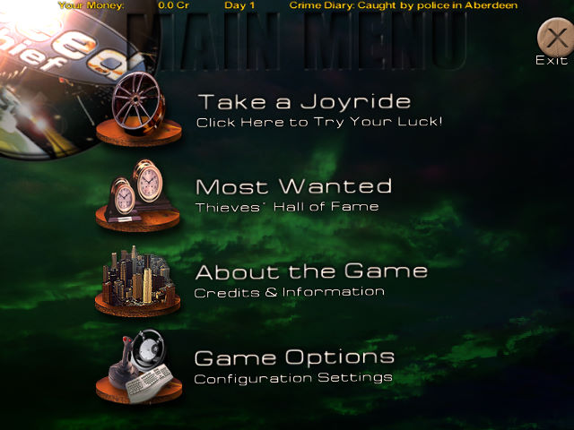
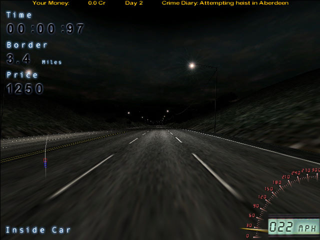

名稱：終極殺陣／極速盜賊 (spdthief，英文版)
簡介：IncaGold GmbH 2001年出品的駕駛競速遊戲，玩家扮演著一個暗夜偷車賊，必須駕駛
贓車迅速逃離警方的追捕 [待補]。


保護：2001年歐版為光碟，2002年美版無保護
備註：本遊戲有2001年歐版與2002年美版等光碟，檔案互異，尚不知其差異（美版多了手冊）。
備註：VirtualBox無法正常執行，虛擬機請使用VMware。
備註：XP以上系統執行時，需設定speedthief.exe為Win9x相容。